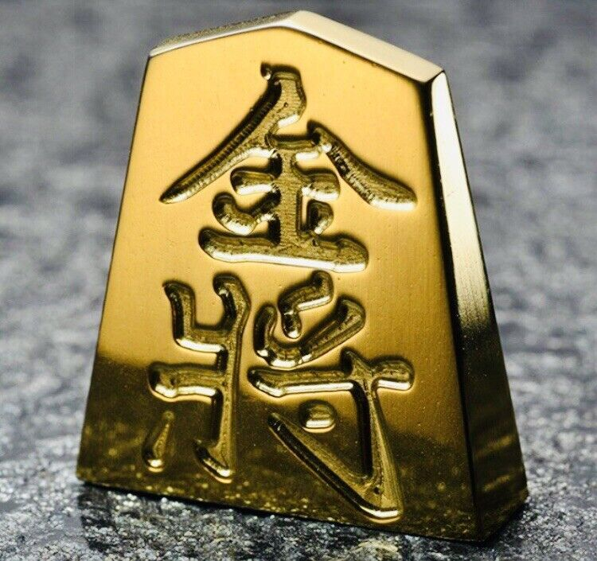

Home
About
Quiz
About Shogi

The Gold General (sometimes just called gold) may move and attack onesquare forward, one
square diagonally forward, one square leftm one right, or one backwards.
A chess bishop and shogi bishop have the same exact move set and can
move any number of squares forward or backward diagonally.
How to play
Both Chess and Shogi are games of strategy designed for two players.
Each game shares its winning phrase at the final move Checkmate. The
objective for both Shogi and Chess is simply to capture the opponent's
king. Even some of the pieces have shared names.
Where did shogi come from
The exact origin of Shogi is Japan, but it most likely evolved from
Chinese chess when it was delivered by the imperial ambassador during
the rule of Nara (710-794). It became popular with Japanese nobility in
the Heian period (794 - 1185) when the Japanese capital moved from Nara
to Kyoto.